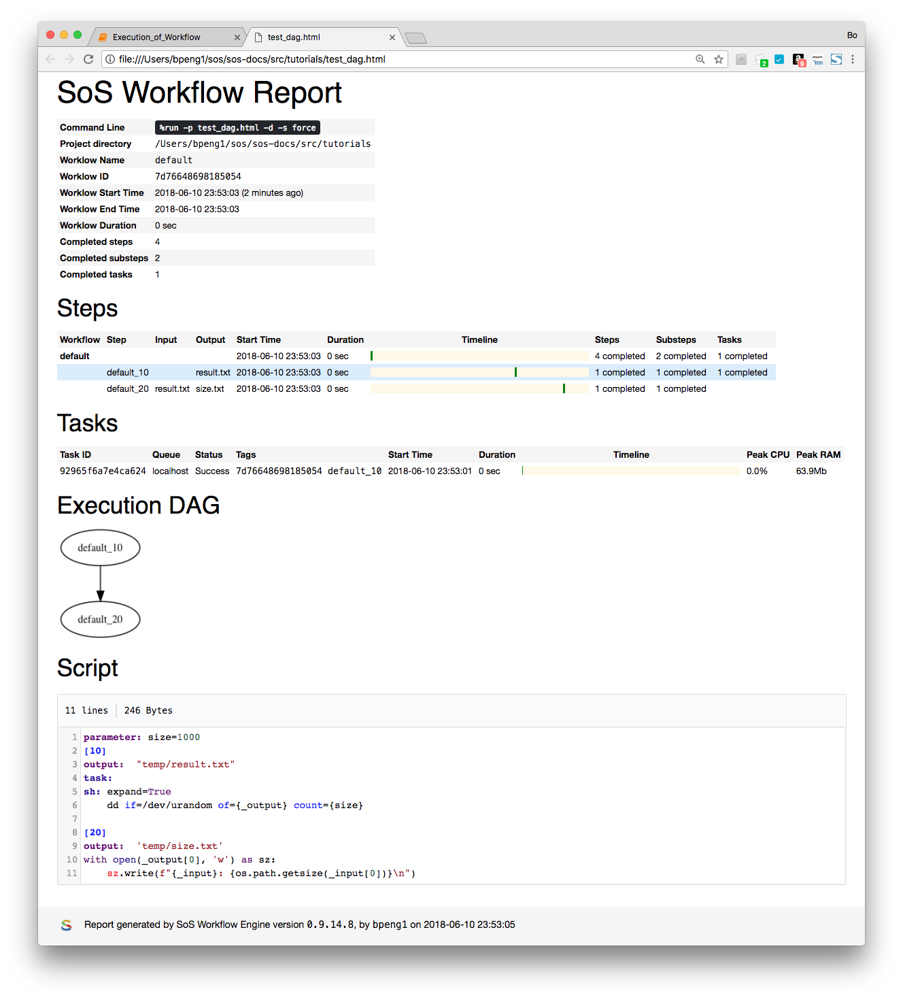

The content of this chapter is largely applicable to batch mode but we represent it in Jupyter notebook for easy reproduction of results. If you are not familiar with Jupyter notebook, please refer to chapter Notebook Interface for details. For the impatience, the magics
%sandgox execute the cell in a temporary directory!cmd execute shell command cmd%run run the cell as if in command line with specified options%rerun rerun the last executed script (cell content without magics)%set set options that would be included in each $run commandSoS uses a logging system to output all sorts of information during the execution of workflows. The amount of output can be controlled by logging level, which can be error (0), warning (1), info (2), debug (3), and trace (4). The default logging level for SoS is info in batch mode and warning in interactive mode.
For example, logging at info level would produce message indicating the steps executed and input output files, but nothing but warning and errors at the warning level.
dryrun mode¶The dryrun mode is used to check for syntax errors of a SoS script without actually executing any of the actions. It can be specified with option -n. For example, running the following script in dryrun mode would produce an error message
because the header of the step is wrong (should use : instead of ,).
The dryrun mode would print the commands in a script without actually executing them:
There are cases where you would like to use a specific version of programs for your workflow but do not want to change the system $PATH because of its global effect. In this case you can prepend pathes to these executables to $PATH using option -b.
The following example first cretes a executable ls in tmp with an echo command. Using the option -b tmp, the tmp directory is prefixed to the system $PATH before the workflow is executed. The consequence is that this fake ls supersedes the system ls when ls is called in step_10 of the workflow.
The -b option has a default value ~/.sos/bin, so any command under ~/.sos/bin would be executed (before system command with the same name) even if the executables are not under system $PATH. This feature allows you to create commands that would only be used inside SoS-scripts, and more interestingly, allows you to create executable or install programs on-the-fly.
For example, step 20 of the following workflow depends on an executable lls that is not a system executable.
because lls is created under ~/.sos/bin, it would be immediately available to SoS after the install_lls step. This works for any program as long as you can create a symbolic link under ~/.sos/bin after its installation.
You can always disable this behavior by setting option -b without value.
One of the most annonying problems with the development and execution of workflows is that it can take very long times to execute then. What makes things worse is that we frequently need to re-run the workflow with different paremeters and even different tools -- it can be really time-consuming to re-execute the whole workflow repeatedly, but it is also very error-prone to repeat selected steps of a workflow.
SoS addresses this problem by using runtime signatures to keep track of execution units, namely the input, output, and dependent targets, and related SoS variables of a piece of workflow. SoS tracks execution of statements at the step level for each input group and saves runtime signatures at a folder called .sos under the project directory. The runtime signatures are used to
This tutorial focuses on the first usage. The second one would be described in detail in Project Management.
ignore mode¶SoS workflows can be executed in batch mode and in interactive mode using the SoS kernel in Jupyter notebook or qtconsole. Because the SoS kernel is mostly used to execute short statements in SOS and other kernels, runtime signatures are by default set to ignore in interactive mode (and to default in batch mode).
Let us create a temporary directory and execute a workflow that take a bit of time to execute. This is done in the default ignore signature mode of the Jupyter notebook
Now, if we re-run the last script, nothing changes and it takes a bit of time to execute the script.
default mode¶Now let us switch to default mode of signature by running the script with option -s default. When you run the script for the first time, it would execute normally and save runtime signature of the steps.
but both steps would be ignored. Here we use -v2 to show the ignored message. This time we use magic %set to make option -s default persistent so that we do not have to specify it each time.
However, if you use a different parameter (not the default size=1000), the steps would be rerun
The signature is at the step level so if you change the second step of the script, the first step would still be skipped. Note that the step is independent of the script executed so a step would be skipped even if its signature was saved by the execution of another workflow. The signature is clever enough to allow minor changes such as addition of spaces and comments.
assert mode¶The assert mode is used to detect if anything has been changed after the execution of a workflow. For example,
Now if you change one of the output files, sos would fail with an error message.
force mode¶The force signature mode ignores existing signatures and re-run the workflow. This is needed when you would like to forcefully re-run all the steps to generate another set of output if outcome of some steps is random, or to re-run the workflow because of changes that is not tracked by SoS, for example after you have installed a new version of a program.
build mode¶The build mode is somewhat opposite to the force mode in that it creates (or overwrite existing signature if exists) with existing output files. It is useful, for example, if you are adding a step to a workflow that you have tested outside of SoS (without signature) but do not want to rerun it, or if for some reason you have lost your signature files and would like to reconstruct them from existing outputs.
This mode can introduce erraneous files to the signatures because it does not check the validity of the incorporated files. For example, SoS would not complain if you change parameter and replace temp/result.txt with something else.
SoS keep tracks of all intermediate files and will rerun steps only if any of the tracked files are removed or changed. However, it is often desired to remove some of the large non-essential intemediate files to reduce diskspace used by completed workflows, while allowing the workflow to be re-executed without these files. SoS provides a command
sos remove files --zapto zap specified file, or for example
sos remove . --size +5G --zapto zap all files larger than 5G. This command removes specified files but keeps a special {file}.zapped file with essential information (e.g. md5 signature, and size). SoS would consider a file exist when a .zapped file is present and will only regenerate the file if the actual file is needed for a later step.
For example, let us execute a workflow with output temp/result.txt, and temp/size.txt.
and let us zap the intermediate file temp/result.txt,
As you can see, temp/result.txt is replaced with temp/result.txt.zapped. Now if you rerun the workflow
Command sos run accepts an option -p (rePort) for generating a summary report after the completion of the workflow. This option accepts a name for the generated output but an name containing a timestamp would be generated automatically if it is the parameter is given without value.
Using the same example but converting one of the steps as a task, a report named "test.html" would be generated with option -p test.html, showing summary of steps and tasks.
A DAG would be generated and included in the report if option -d is specified.
